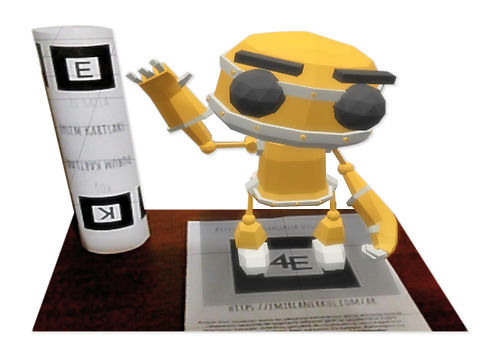

Artırılmış Gerçeklik


Üniversitemin ilk döneminde sınıfımda gerçekleştirdiğim Bilgisayarlı Görme sunumunda kullanmak üzere bu çalışmayı yaptım.
Öncelikle projemin konusu hakkında teknik hiçbir deneyimim yoktu fakat yazılım tecrübelerime güveniyordum. Kısa zamanda bir proje ortaya koymam gerektiğinden dolayı ve web teknolojilerine diğer teknolojilerden daha çok yetkin olduğumu düşündüğüm için web teknolojilerinde artırılmış gerçeklik uygulamaları üzerine araştırmaya koyuldum ve ar.js açık kaynak kodlu projeye ulaştım.
ar.js: jsartoolkit5 altyapısını kullanarak kameranın görüş alanına giren tanımlı objenin koordinatlarını bulup bu koordinatlara three.js’in de katkıları ile istenen nesneyi uzay düzleminde yerleştiriyor ve bu nesne gerçeklikle son derece uyum içerisinde olduğu için bu konsepte artırılmış gerçeklik deniyor. Yerleştirilen bu nesneye artırılmış gerçeklik nesnesi kendi tanımımla gerçek gibi algılanan ama gerçek olmayan sanal nesne deniyor.
Proje Geliştirme Aşaması
Yapmak istediğim projede bilgisayarlı görmenin kullanıldığı tek kısım kameraya gösterilen objenin bilgisayar tarafından algılanıp koordinatlarının belirlenmesi kısmıydı. Artırılmış gerçeklik konseptinin ön plana çıktığı bu proje, proje konum olan bilgisayarlı görme konsepti ile daha fazla örtüşmesi için birçok obje algılayabilecek şekilde bu projeyi geliştirme fikri aklıma geldi. Bu sayede yapmak istediğim projedeki bilgisayarlı görme kısmı çok daha belirgin olacaktı.
Bu kısımda biraz three.js’den bahsetmek istiyorum. Three.js en gelişmiş 3D javascript kütüphanelerinden biridir. ile zengin örnek kataloğuna ulaşabilirsiniz. Bu kataloğu incelerken webgl başlığı altındaki dördüncü örnek dikkatimi çekti. Bu örnekte 3 boyutlu şekilde robot yürür halde hareket ediyor. Kontrol butonları ile bu robotun hareketini değiştirebiliyorsunuz. Bu robotu projemde kullanmaya karar verdim. Projemde robotun yerleştirileceği platform için bir adet büyük kart, robotun hareketlerini kontrol edebilmek için ise 6 adet küçük kart tasarladım.
Gerçekler
Aslında bu projede tam anlamıyla kod yazdım diyemiyorum, kod derledim demem çok daha doğru olur. Github üzerinde ar.js’in verdiği örneklerden yapmak istediğim projeye en yakın örneği seçtim, three.js örneklerinden de fikrim ile birebir örtüşen robot modelinin bulunduğu örneği seçtim. Şimdi sıra three.js’den aldığım örnek ile ar.js’den aldığım örnekleri birleştirmeye geldi. Öncelikle three.js’den aldığım örnekte robotun çeşitli hareketleri yapabilmesi için butonlar kullanılıyordu, bu özellik benim fikrime tamamen ters düştüğü için butonları kaldırdım ve robotun çeşitli hareketleri yapabilmesini sağlayabilmek için oluşturduğum kartları bilgisayarın görebilmesi için tanımladım ve gerekli kodları yazdım.
Derlemiş olduğum yazılımı tarayıcı ile açtıktan sonra karşımıza çıkan sayfa öncelikle bizden bilgisayar kamerasını kullanabilmek için izin istiyor ardından robot platformunu kameranın görüş alanına tuttuğumuzda bu platform üzerinde robot beliriyor. Daha sonra eylem ve durum kartlarını kameramızın görüş alanına getirince bilgisayar gösterdiğimiz kartı anlayıp robotun ilgili animasyonunu çalıştırıyor. Sizler de yaptığım bu uygulamayı buraya tıklayarak deneyebilirsiniz. Gerekli kart dosyaları ilgili sayfada yer almaktadır bu kartları yazıcıdan çıkartmanız gerekmektedir. (Üniversitemin öğrencileri için okul dönemince bu kartı ücretsiz olarak temin etmekteyim. Lütfen iletişime geçmekten çekinmeyin). Geri bildirimleriniz benim için önemli, kullandıktan sonra geri bildirimde bulunursanız sevinirim.
Ar.js ve Three.js geliştiricilerine projelerinin kaynak kodlarını açık bir şekilde paylaştıkları ve detaylı dokümantasyon sundukları için çok teşekkür ederim. Onlar sayesinde bu projeyi oluşturup sunumumu başarılı bir şekilde gerçekleştirdim. Dilerseniz projemin kaynak kodlarına github sayfamdan erişebilirsiniz.